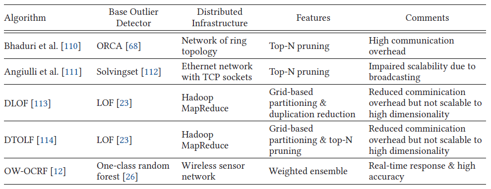
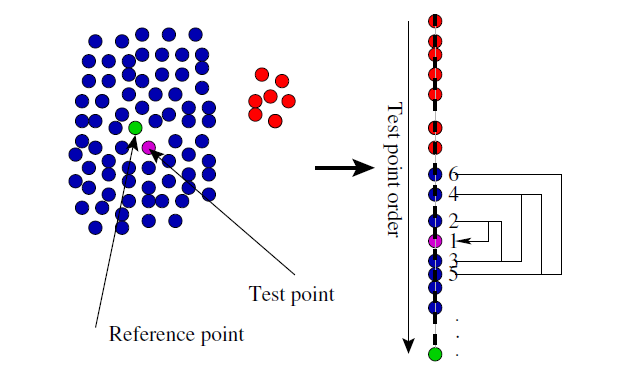
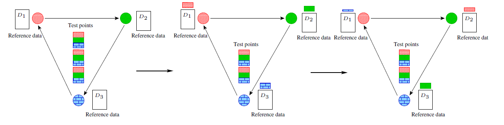
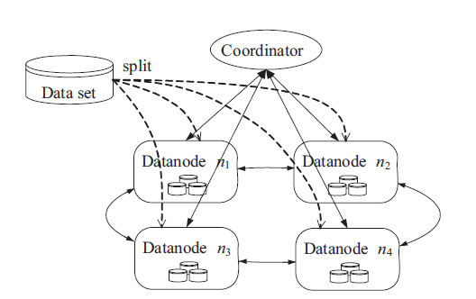
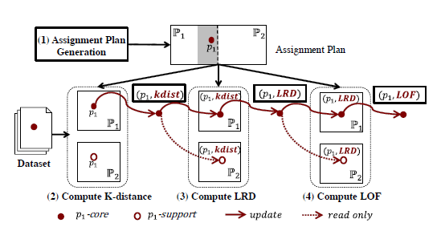

3.5k words in total, 13 minutes required. Boukerche, Azzedine, Lining Zheng, and Omar Alfandi. “Outlier Detection: Methods, Models, and Classification.” ACM Computing Surveys 53, no. 3 (May 31, 2021): 1–37. https://doi.org/10.1145/3381028. 文章较长，笔记分为多篇，上一篇主要介绍了流数据场景下的异常检测方法。 数据分散在不同计算结点的情形越来越常见，传统的中心方法可能在受限的计算资源面前有一定缺憾，从而难以满足严苛的时间需求。 分布数据场景的异常检测方法面临的挑战往往是如何减少通讯开销而保持一定的准确率。 分布异常检测方法一览 DOoRdistributed solution for the ORCA method[1], 利用k-distance作为outlier score并采用剪枝规则。 ORCA首先介绍下ORCA方法和本篇作者设计的基于index的改进。 ORCA[7]方法主要基于简单的k-bound剪枝和随机化，其将数据集分成block读入到内存中，而不是一次性导入，其基本思路如下： 读入一个test block的数据，然后计算每个点在test block中到邻居的距离； 在计算中，其保持每个点当前的最近邻信息，如果其outlier score (k-distance) 比当前记录的top-N的outlier score (threshold $c$) 还要低，证明其不能进入到top-N中，则将其排除； 如果找到一个outlier，则更新$c$和outlier list； 随着越来越多点被处理，$c$会越来越大，因此pruning的rate越高。 iORCA针对ORCA，采用indexing的iORCA的主要思路如下图所示： iORCA 随机从集合中选择一个参照点$R$，预计算每个点和$R$的距离，并进行从小到大的排序。在载入内存阶段，从更大的点开始载入：直觉上，由于异常点更容易和随机选择的$R$的距离更大，载入的开始阶段越容易选择到真的outliers，从而很快使得阈值$c$提高到一个较高水平，加快pruning的速率。文中还给出了一个early stop的条件，即处理到一定阶段的点后，可以提前终止后续的搜索。 另一方面，针对任意一个test point进行nearest neighbor选取时，可以采取如图所示，采取螺旋方式进行搜索，有更大概率提前搜索到。 DOoR随后文中提出了分布场景的算法DOoR，其中一个是基于上述提出的indexing方法。 场景：环覆盖网络拓扑 (ring overlay topology)，加上一个连接到所有机器的中心结点。 中心节点$P_0$维护当前的top-n和最大的k-distance作为cut-off threshold：当threshold信息在中心结点上被更新时，$P_0$会进行广播以进行有效的剪枝。每个worker node保持一部分数据，并将数据传递到下一个结点进行比对。过了一圈后，没有被剪枝的数据被传给centralized node进行后续评估。 具体而言，每个结点$P_i$可以读取自己的partition $D_i$，中心结点$P_0$维护当前的outlier list $O_k$——其中有$n$个点，保持最大的k-distance (一开始是空集，随着各结点的计算而不断被更新)。 DOoR 如上图所示的拓扑，各个worker执行的是push-pull mode。文中采取了一种简单的block分配方式，按序发送给各个workers，然后并行执行 push：在本地执行block，如果某点的k-distance低于本地的threshold，则被剪枝，否则该点和其相关信息被推送到下一个worker pull：首先先从上一个worker得到需要验证的点，如果这些点的邻居会被当前partition中的某些点给替掉，则neighbor list和k-distance都要被更新，如果k-distance比当前的threshold要小，则被剪枝，否则要传送回$P_0$进行最终验证。 当所有的点都被处理完毕，则终止。 iDOoR利用了indexing的DOoR被称之为iDOoR：$P_0$首先选择一个参考点并按照距离进行排序，然后把参考点广播给各个workers。各个workers根据参考点构建本地的索引，剩余的部分和DOoR类似。 总结以上，DOoR计算代价过高且不scale。 distributed SolvingSet algorithm该算法[2]的outlier score (outlier weight) 定义是基于sum of k-NN’s distances。 solving set求解集 (solving set) 是一个迭代扩展的样本子集$S \subseteq D$，满足任意一个集合外点针对于$S$的outlier weight都小于n-$th$ outliers的。据此，可知，$S$一定包含top-n outliers。 和DOoR类似，该算法设定有一个supervisor node $N_0$ 和 若干个local nodes (承担一个local data partition $D_i$)。问题的目标是计算solving set和$D$上的top-n outliers。 SolvingSet算法迭代算法：在第$j$次迭代时，选择一个小子集$C_j$，并计算全集点针对每个$C_j$内点的k-NN。处理的点的集合$C_1 \cup \ldots \cup C_j$ 的 k-NN被保存。处理的点的集合就是最后保存的solving set。 由此，可以根据计算的k-NN信息获得每个点的weight的上界 (因为当前得到的neighbors可能不是真实的k-NN)，但是已经被处理的点 (candidate objects) 的weights是准确的 (因为他们已经完成和全集点的pairwise distance计算)。则，那些upper bound weight比准确的weights更低的点被称之为nonactive，反之称之为active。 在迭代过程中，$C_j$选择的点是从active points中选择的——随着迭代的深入，越来越多更有可能成为outliers的点被计算，计算的weights越来越准确。 DistributedSolvingSet算法top-N outlier score被维护，因此non-outliers可以提前移除。solving set需要不断进行广播——因此，随着solving set的扩大，其scalability受限。该方案的优化包括并行计算和针对部分结果的同步。 中心结点负责以下两个任务的协调： core computation，由所有其他local node完成； synchronization of partial results，在local node完成计算之后，其每次将local node的outlier weights得到并估算一个global lower bound——低于这个下界一定不是outliers。 每个本地结点的core computation的计算流程如下： 得到当前的solving set和top-n outliers的当前下界； 将solving set的点和当前的本地点进行对比； 由此得到local candidate objects； 确定local active objects。 随着迭代的深入，lower bound会不断提升。 LazyDistributedSolvingSet算法在本地计算每个candidate object $q$的k-NN’s distances时，采用了incremental precedure——发送到中心结点的distances是按照从小到大分批发送的，如果需要更加准确判定outlier weights的信息，下一个批次的distances被发送到中心结点。 distributed LOF其基本outliers定义是参照LOF，见本系列第二篇。以下介绍了两个设定类似的工作。 Bai et al.Bai等人[6]的设定如下图所示，采用了通用的分布式场景，包含一个coordinator和数个datanodes。在这个问题中，数据计算主要由datanodes承担，作者认为coordinator的计算量是scale的。 基于grid partitioning来balance workload，将相邻的grid分配给相同的机器。基于本地k-distance和grid border，那些k-NN在同一个partition内的数据点被识别，被称之为“grid-local tuples”。其他的数据点，被称之为“cross-grid tuples”，其基本思想是部分必要的通讯仅针对cross-grid tuples，而grid-local tuples可以在本地被处理。 Bai等人的distributed LOF 高维数据的grid partitioning存在限制，这项工作的方法如下：对于小于$l$的dimension size $d$，各自分为$s$等分，总共产生grid cell的数量为$s^d$；对于大于$l$的$d$，随机选择$l$个维度，同样各自分为$s$等分，则grid cell数量为$s^l$；则总共不超过$s^l$。 接下来需要将grids分配到datanodes，两个因素：1）分配的平衡；2）使得local计算的k-distance更加高效，更少的通讯代价。方法如下： 将所有的grid按照其包含tuples的个数倒序排列； 随机将一个grid分配给一个datanode，直到不存在没有grid的datanode存在； 否则，开始计算当前每个datanode平均的tuple数，如果小于平均数，则该datanode作为候选；从候选中选出一个和当前处理的grid邻居最多的datanode进行分配； 迭代处理，直至完成。 基本看到，是一个贪心思路先安置最大的grid，并使得其尽量平衡和高效。 随后，在计算分布LOF的过程中，datanode构造R-tree来计算nearest neighbors。具体而言，其从grid partitioning之外的维度上随机选择最多$l$个维度构建R-tree。 但是local k-distance不一定能代表global k-distance，在判定上，以local k-distance为半径构成的闭包如果超过这个grid的范围，那么这个grid为cross-grid tuple，需要额外验证——具体方法是将可能相邻的grid上相交范围用一个最小矩形扩展，来覆盖所有可能的邻居，并发送给当前的grid以计算actual k-distnace。 DDLOF (Data-Driven Distributed LOF)Yan等人在KDD’17上，提出了类似的分布式LOF方案[3]，DLOF。他们对Bai等人的方案进行了额外优化。特别地，他们提出了supporting area的概念，如果一个点$p$是某个partition内点的k-NN，则其也会被分布到那个partition中。此外，其他方面的优化主要基于这些观察： 数据实例$p$的必要扩展区域 (necessary extending area) 不能超过半径为$p$的局部k-distance的球体——类似于Bai et al. 可以消除那些LOF分数已计算且在任何支持区域中都不需要的数据实例。 首先，DDLOF首先定义了支持点的概念，当计算点$p$的LOF score时，需要知道$p$的k-NN，$p$的k-NN的k-NN，以及$p$的k-NN的k-NN的k-NN，因此这最多$k+k^2+k^3$个点就是点$p$的支持点 (supporting points)。 随后，DDLOF提出了support-aware assignment strategy，其引入了两个角色，其中一个角色有write权限，负责对中间值 (intermediate values) 进行更新；另一个角色是read-only的，仅负责对消费者分发中间值。对应于上述两个角色，定义了core point和support point两个概念： 对一个data partition而言，落入其中的点被称为core point，这是一个多对一关系； 对一个data partition而言，那些不属于它但可能是它其中某些core point的邻居的那些点是support point，这是一个多对多关系。 因此，每个点$p$会被分发给它的core partition和它的多个support partitions——这时，本地可以计算得到outliers。 Data-Driven Distributed LOF 其步骤如上图所示，在计算k-distance、LRD、LOF的过程中，某个点在其core partition内和support partition内都会被更新，但是实际上只有core partition内记录了相关的信息，而在support partition内可以看做是一个备份。 针对于DDLOF的进一步优化，可以利用剪枝：即将那些已经在local data partition内可以计算LOF和LRD的点，可以提前被从workflow中去除，以降低通讯的开销。如下图所示。 Data-Driven Distributed LOF with Early Termination DTOLFDistributed Top-N LOF (DTOLF)[4]是对DDLOF的扩展，使用了和DDLOF类似的grid-based data partitioning。因为其求解top-N的设定，可以避免对某些点进行计算，从而提高计算效率。 DTOLF设计了一个safe elimination策略——消除那些(1)肯定不在top-N outliers内的点 (2)不是其他partitions上点的邻居。 该剪枝规则考虑了一个partition内数据点的距离和partitions的边界。该剪枝规则基本依靠partition的本地属性，因此通讯开销大大降低。具体而言，假定点$p \in \mathbb{P}_1$，$q \in \mathbb{P}_2$，而$b$是$p$和$q$连线在两个partitions边界上的交点。则可知，如果$p$不是$b$的k-NN，则其必不可能是$q$的k-NN。由此，可以估算一条边界上k-distance的上界$U(b)$ (partition内所有点到达boundary的最大距离的第k小的值)，如果partition里某个点到达$b$的最小值比$U(b)$还大，则其一定可以被剪枝。但是如果$b$过长，则估算的$U(b)$可能很大，则剪枝效率过低。为此，可以考虑将$b$裁剪为多个小的segment，则计算可以更加精细，剪枝效率得以提高。 partitioning方法的主要缺点在于其面对高维数据不具备可扩展性。需要的grid cells的数量随着数据维度的增长而指数增长。对于基于k-NN的算法而言，一个数据点需要检查非常多的其他cells来确定其KNN邻居。这往往需要很大的通讯开销。 OW-OCRFdistributed unsupervised anomaly detection framework[5]，针对于wireless sensor networks。 依靠one-class-random forest (OCRF)，各个设备之间分享模型而非数据。为了提高决策树模型的效果，他们设计了一种unsupervised emsembling algorithm来优化模型的权重。权重的优化目标是最小化数据点预测的不确定性。 首先，问题使用OCRF的假设是，当前训练数据都是normal的，以此来训练一个unsupervised model。 继续阅读下一篇。 扩展阅读1.Kanishka Bhaduri, Bryan L. Matthews, and Chris R. Giannella. 2011. Algorithms for speeding up distance-based outlier detection. In KDD, 859–867. ↩2.Fabrizio Angiulli, Stefano Basta, Stefano Lodi, and Claudio Sartori. 2013. Distributed strategies for mining outliers in large data sets. IEEE Trans. Knowl. Data Eng. 25, 7 (2013), 1520–1532. ↩3.Yizhou Yan, Lei Cao, Caitlin Kulhman, and Elke Rundensteiner. 2017. Distributed local outlier detection in big data. In KDD, 1225–1234. ↩4.Yizhou Yan, Lei Cao, and Elke A. Rundensteiner. 2017. Distributed Top-N local outlier detection in big data. In BigData, 827–836. ↩5.Yu-Lin Tsou, Hong-Min Chu, Cong Li, and Shao-Wen Yang. 2018. Robust distributed anomaly detection using optimal weighted one-class random forests. In ICDM, 1272–1277. ↩6.Mei Bai, Xite Wang, Junchang Xin, and Guoren Wang. 2016. An efficient algorithm for distributed density-based outlier detection on big data. Neurocomputing 181, C (2016), 19–28. ↩7.S. Bay and M. Schwabacher. Mining distance-based outliers in near linear time with randomization and a simple pruning rule. 2003. In KDD, 29–38. ↩ Next Post→ Table of Contents DOoRORCAiORCADOoRiDOoRdistributed SolvingSet algorithmsolving setSolvingSet算法DistributedSolvingSet算法LazyDistributedSolvingSet算法distributed LOFBai et al.DDLOF (Data-Driven Distributed LOF)DTOLFOW-OCRF扩展阅读